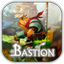
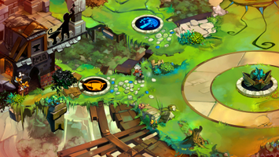
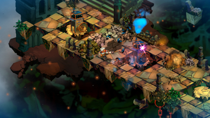
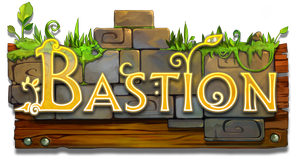

Bastion
Dieser Artikel wurde für die folgenden Ubuntu-Versionen getestet:
Ubuntu 14.04 Trusty Tahr
Zum Verständnis dieses Artikels sind folgende Seiten hilfreich:

Bastion  ist ein kommerzielles Action-Rollenspiel aus dem Hause Supergiant Games . Der Spieler erkundet über 40 handgemalte Umgebungen, während er die Geheimnisse der Kalamität, einer surrealen Katastrophe, die die Welt in Stücke riss, aufdeckt.
ist ein kommerzielles Action-Rollenspiel aus dem Hause Supergiant Games . Der Spieler erkundet über 40 handgemalte Umgebungen, während er die Geheimnisse der Kalamität, einer surrealen Katastrophe, die die Welt in Stücke riss, aufdeckt.
|  |  |
| Spielszene | Spielszene |
Installation¶
Entwicklerseite / Humble Bundle¶
Das Spiel war Bestandteil des The Humble Indie Bundle V. Zusätzlich ist Bastion über dem Humble Store erhältlich. Nach dem Kauf das Spiel von der in der E-Mail angegebenen Seite herunterladen und abschließend die heruntergeladene .deb-Datei ausführen und das Spiel installieren. [1]
Steam¶
Bastion kann über Steam [2] erworben werden. Um das Spiel nach dem Kauf zu installieren, wird der Steam Client benötigt.
Ubuntu Software Center¶
Das Spiel kann zudem über das Software-Center gekauft [3] werden: Bastion . Nach dem Erwerb des Spiels werden die benötigten Daten zur Installation übermittelt.
Bedienung¶
Folgende Tasten dienen zur Steuerung:
| Steuerung | |
| Aktion | Taste |
 | Spielfigur bewegen |
| Ausweichen | |
 | Attacke 1 |
 | Attacke 2 |
| Q | Geheime Fähigkeit |
| ⇧ | Verteidigen |
| F | Heilen |
| E | Benutzen/Interagieren |
| R | Nachladen |
| Tab ⇆ | Inventar öffnen |
| Bild ↑ / Bild ↓ | Nächstes Ziel / Vorheriges Ziel |
Infobox¶
| Bastion | |
| Genre: | Action RPG |
| Sprache: |     |
| Veröffentlichung: | 2011 |
| Publisher: | Supergian Games |
| Strichcode / EAN / GTIN: | - |
| Systemvoraussetzungen: | > 1.7 Ghz Dual Core Prozessor / > 2 GB RAM / Grafikkarte mit 512 MB VRAM |
| Medien: | Download |
| Läuft mit: | nativ |

- Erstellt mit Inyoka
-
 2004 – 2017 ubuntuusers.de • Einige Rechte vorbehalten
2004 – 2017 ubuntuusers.de • Einige Rechte vorbehalten
Lizenz • Kontakt • Datenschutz • Impressum • Serverstatus -
Serverhousing gespendet von